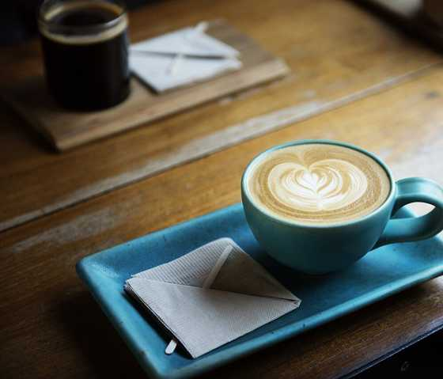

岩見沢市 手作りごはんと雑貨
手作りのごはんと、
ちいさな雑貨でほっと一息。
Instagramで「手作りごはんと雑貨」と紹介されているお店、ラフ。ごはんも、かわいいものも、ひとつの場所で楽しめるお店です。

VOICE
こんなふうに過ごせたら(口コミのイメージ)
以下は制作側が作成したイメージ例であり、実際のお客様の声ではありません。
イメージ例
仕事の合間に寄って、ゆっくりごはんをいただきました。ひと息つけて、午後もがんばれそうです。
イメージ例
甘いものと飲み物で、ついおしゃべりが弾みました。雑貨を眺める時間も楽しいです。
イメージ例
手作りのやさしい味で、また来たくなりました。小さなお店のあたたかさを感じます。
ABOUT
お店について
ラフは、北海道岩見沢市5条東18丁目にあるお店です。Instagramのプロフィールでは「手作りごはんと雑貨」と紹介されており、ハイライトには「あまいもの」「虹フェス」「かざりもの」があります。食べログには、2013年1月オープンのカフェとして掲載されています。
情報源: Instagram / 食べログ(ラフ・岩見沢市5条東18-51の掲載)
店名「ラフ」の由来や意味、オーナーの想いは確認できていません。「ほっと笑える」という方向性は制作側のイメージです(英字表記が「Laugh」であることに着目した制作側の案)。
写真クレジット
- photo-r01.jpg:「青いコーヒーカップ」 作者 rawpixel.com rawpixel / CC0 1.0 / 出典(Wikimedia Commons) / 撮影地: 不明
- photo-r02.jpg:「白い皿にのったチョコレートケーキ」 作者 Daria Yakovleva / CC0 1.0 / 出典(Wikimedia Commons) / 撮影地: 不明
- photo-r03.jpg:「テーブルの上のコーヒーカップ」 作者 Genaro35 / CC0 1.0 / 出典(Wikimedia Commons) / 撮影地: 不明
- photo-r04.jpg:「ハートのラテアート」 作者 Shixart1985 / CC BY 2.0 / 出典(Wikimedia Commons) / 撮影地: 不明
- photo-r05.jpg:「小さなケーキとコーヒー」 作者 Shixart1985 / CC BY 2.0 / 出典(Wikimedia Commons) / 撮影地: 不明
- photo-r06.jpg:「木のテーブルのコーヒーカップ」 作者 Artem Beliaikin from Moscow, Russia / CC BY 2.0 / 出典(Wikimedia Commons) / 撮影地: 不明
- photo-r07.jpg:「カフェのテーブルのコーヒー」 作者 Ssu / CC BY-SA 4.0 / 出典(Wikimedia Commons) / 撮影地: フィンランド
- photo-r08.jpg:「木のテーブルのブラックコーヒー」 作者 Nenad Stojkovic / CC BY 2.0 / 出典(Wikimedia Commons) / 撮影地: 不明
- photo-r09.jpg:「ラテアート」 作者 Kim Sanso / CC0 1.0 / 出典(Wikimedia Commons) / 撮影地: 不明
- photo-r10.jpg:「カフェのテーブルのあたたかいコーヒー」 作者 Shixart1985 / CC BY 2.0 / 出典(Wikimedia Commons) / 撮影地: 不明
- photo-r11.jpg:「ケーキのアップ」 作者 Lori L. Stalteri from North of Boston, US / CC BY 2.0 / 出典(Wikimedia Commons) / 撮影地: 不明
- photo-r12.jpg:「レモンのバントケーキ」 作者 Stacy / CC BY 2.0 / 出典(Wikimedia Commons) / 撮影地: 不明